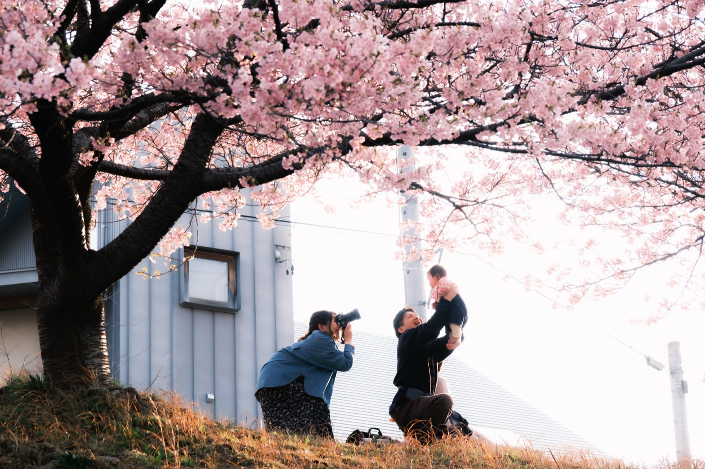

當大谷翔平在洛杉磯的球場上創下漫畫《棒球大聯盟》也未曾預演過的「超現實」二刀流紀錄，日本社會看到的，是一個能向外延伸的夢——純粹、無懈可擊、被世界仰望。但在大谷向上飛升的同時，東京永田町裡，另一個從漫畫走出來的人物正穩定地接近權力的最高點：高市早苗。
如果說大谷代表日本「想成為的樣子」，那麼高市則是日本「不得不面對的樣子」。要理解這位即將成為自民黨總裁、可能成為首位女性首相的政治人物，我們未必需要從西方政治學的「右翼回潮」標籤入手。一個更貼近日本社會精神底層的閱讀方式，是回到漫畫家弘兼憲史筆下的兩部長壽作品：《政治最前線》（《加治隆介の議》）與《島耕作》系列。前者提供了「方法」，後者解釋了「焦慮」——兩者交織出來的，正是高市早苗所代表的「絕對現實主義」。
壹加治隆介的手段：九〇年代的改革基因
《政治最前線》連載於 1991 至 1998 年，那是日本戰後最劇烈的精神轉折期。冷戰結束、泡沫破滅、阪神大震災、地下鐵沙林事件——「經濟一流、政治三流」的自嘲在這個時期變得苦澀而不再幽默。漫畫主角加治隆介，是弘兼憲史投射出的理性改革者：他放下家業繼承議員，從零做起，主張的核心始終是「國家正常化」——日本應擁有獨立的國防、外交與決策權，不應永遠被綁在《和平憲法》與美日安保的框架裡。
加治的政治風格，最大特徵是「去脈絡化的直言」。他說的不是日本政治圈習慣的「永田町文學」（用模糊、留白、間接的修辭包裹真實意圖），而是一種「理科生式」的直接：飛彈射程是多少公里、攔截機率是多少百分比、國際法上某條款的明確含義為何。
高市早苗繼承的，正是這一筆「加治式」的語法。當她在記者會上以極快的語速、冰冷的數據談「台灣有事即日本有事」、談反擊能力（counterstrike capability）、談經濟安保時，她明確跳出了岸田文雄那種「綜合考量、繼續檢討」的曖昧句式。對於厭倦了「平成以後三十年、什麼都沒解決」的日本選民——尤其是中年以下的男性、與一部分被《男女共同参画》論述邊緣化的女性——這種「不再裝模作樣」的直白，是一種久違的心理快感。
貳島耕作的焦慮：從「征服市場」到「經濟安保」
如果加治隆介解釋了「方法」，那麼《島耕作》系列就解釋了「為何此刻」。
弘兼憲史筆下的島耕作，從 1983 年的《課長島耕作》一路畫到 2020 年代的《社外取締役島耕作》，跨越了將近四十年的日本企業史。1980 至 1990 年代的島耕作，是「Japan as No.1」餘暉中的企業戰士：相信全球化、相信技術立國、相信只要產品夠好，世界就是日本的市場。他要解決的問題是「如何贏」。
但到了令和時代，島耕作的世界已經變了。日本 GDP 被中國超越十年有餘，人均 GDP 被韓國反超，半導體技術被台灣與韓國全面取代，能源與糧食則高度依賴海外。最新一部《社外取締役島耕作》中，已經很少再看到「擴大市佔率」的狂熱，取而代之的是供應鏈安全、技術外流、糧食自給率、地緣政治風險。島耕作從一個「逐利的商人」，變成一個「憂國的長者」——他要解決的問題已經改變：不是「如何贏」，而是「如何不輸、如何活下去」。
高市早苗推動的《經濟安全保障推進法》，幾乎可以視為「顧問島耕作」對國會的一張政策清單：把供應鏈韌性提升至國防層級、對關鍵基礎設施實施國安審查、防止尖端技術外流、補貼半導體與電池等戰略產業。她並不是憑空提出一套右翼經濟學，她是精準地把日本企業界（特別是製造業與重工業）的集體恐懼，翻譯成可以投票的政治語言。她是「焦慮的島耕作」在政治上的代理人。

參傳統的浮木：本體論安全感
高市早苗的政治圖像中，存在一個表面的矛盾：她繼承了加治隆介那種「打破舊框架」的改革基因，卻又在許多議題——夫婦別姓、靖國神社參拜、皇室繼承——上展現出強烈的傳統主義立場。這兩者如何相容？
答案在於時代的不同。九〇年代日本的焦慮，是「太封閉、需要被打開」；二〇二〇年代日本的焦慮，是「正在消失」——人口減少、地緣威脅、經濟停滯、文化認同被全球化稀釋。在這樣一個「結構性的傍晚」，選民需要的不是又一個「打破傳統」的改革者，而是一個「守住核心」的保護者。
理論借用借用社會學者 Anthony Giddens 的「本體論安全感」（ontological security）概念來說：當外部世界劇烈動盪時，個體會把心理錨點放在那些象徵連續性的事物上——制度、儀式、傳統。
高市的傳統主義，與其說是意識形態，不如說是她與選民之間的契約：「日本之所以為日本的核心，我會替你守住。」這一張「文化浮木」，與她另一手揮出的「經濟安保鋼鐵」並不衝突，反而是同一張政治地圖的兩個座標。
肆強く、豊かに：成年人的童話
高市早苗最常掛在口邊的政治標語是「日本を、強く豊かに」（讓日本更強大、更富足）。這句話拆開看，正是加治隆介與島耕作兩條線的合流：
- 強く（強大）：繼承加治隆介路線。透過修憲、國防自主、擁有反擊能力，讓日本在面對中國與北韓威脅時挺直腰桿——這是物理與外交層面的力量。
- 豊かに（豐足）：回應島耕作的期待。透過積極財政（市場已經給它取了個外號「早苗經濟學」Sanaenomics）、戰略性產業投資、保護核心技術，讓日本擺脫「失落三十年」的通縮陰影，重回成長。
值得注意的是，這套願景並沒有少年熱血的色彩。它不像安倍晉三早期的「美麗的日本」那樣訴諸民族敘事的浪漫，也不像石破茂那樣執著於制度細節的辯證。它更像是一個清醒、計算、不抱幻想的中年人為國家寫下的處方：在美中對抗的夾縫中，先確保自己生存下來，再談繁榮。
如果說大谷翔平是日本社會「向外延伸」的夢——一個關於青春、關於可能性、關於被世界肯定的童話；那麼高市早苗就是日本社會「向內鞏固」的夢——一個關於成年、關於自保、關於在不確定中守住確定的童話。它沒有華麗的辭藻，但對一個正在學會接受自己「不再年輕」的國家來說，這或許是最貼近選民心理的政治語言。

作者按 ・ Note from the Author
本文成於日本國會大選前夕。無論最終選舉結果如何，「高市現象」所折射出的日本社會集體心理變遷，已經值得作為東亞政治社會學的一個案例長期觀察。在後續的「東亞觀察最前線」專欄中，我會繼續從相鄰的角度——韓國尹錫悅以後、台灣的二〇二八、北京的「新常態」——觀察這個正在重新定義自己的東亞。
本文由葉崇揚與 Claude（Anthropic）共同討論、共筆完成；分析框架、案例選取與最終文責，由作者承擔。